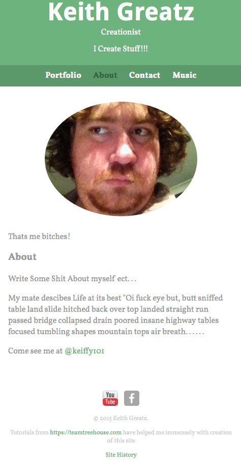

This is where the Sites history will be, basically a blog of sorts detailing the beginings of the site and its progress as it moves forward.
30th June
Its been a while since I updated the history of the site or even added anything to it, I have been busy learning JavaScript and continuing the HTML/CSS. I still dont really expect anyone to check it anyway if you did happen to check it out drop me an email let me know because I love attention. All I have really done with the site is update the Music page to include alot more songs. I really need to finnish of the menu for it though (the little red and black symbol at the bottom of the music page) as without that finnished the page still doesnt fill the role I originally wanted for it. I have added some extra testpages to my Stuff page, but they change constantly so theres no real point going there unless you just want to check out what im testing. I hope to get started on the Keiffys Games page tonight, at least a start anyway, thats it for the latest site history, time for a smoke, peace.

5th June 2015
This site was founded on 29th of May 2015 around 4 days after I personaly decided to continue learning web development. I have had a site previous to this but used a wysiwyg web builder tool, this site will not be created in such a way it will be all done through manual code and my eforts to learn more about web development. Over the last 2 weeks I have extended my knowledge of web development further than I ever did years ago, this will continue through the use of HTML5, CSS and either PHP or RUBY and from what I hear I guess I'll have to learn JavaScript also. As I continue to develop my site I'm going to update this history page in what will turn out to be basically my blog about my new found passion for web development. I dont have the time or paitience to give a full rundown of what has happened in the last two weeks right now as its been a long night of learning to code while drinking a bottle of Bourboun (my drug of choice), Instead I'm going to enjoy some bad ass carbonara I'm cooking up and will finnish this brief history off later today for now let me share my first screen shot of the site below.
